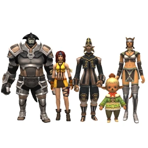
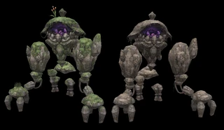
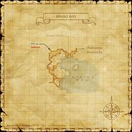

Description
Bibiki Bay is an outdoor area in Kolshushu.
Map

Involved in Quests / Missions
| Quest / Mission | Type | Starter | Location |
|---|---|---|---|
| The Gobbiebag Part VI | Gobbiebag | Bluffnix | Lower Jeuno (H-9) |
| One Good Deed? | Map | Chipmy-Popmy | Port Windurst (C-8) |
| Recycling Rods | General | Keshab-Menjab | Mhaura (H-9) |
| The Search for Goldmane | General | Zoriboh | Rabao (F-6/7) |
NPCs
| Name | Location | Type |
|---|---|---|
| Fheli Lapatzuo | H-7 (Map 1) | Adventurer's Assistant - Timeschedule Manaclipper |
| Mep Nhapopoluko | H-7 (Map 1) | Guild Merchant - Fishermen |
| Tswe Panipahr | H-7 (Map 1) | Boat Ticket Vendor - Manaclipper |
| Noih Tahparawh | H-7 (Purgonorgo Isle) | Adventurer's Assistant - Timeschedule Manaclipper |
| Toh Zonikki | H-7 (Purgonorgo Isle) | Adventurer's Assistant - Clamming NPC |
| Rhalo Davigoh | H-7 (Purgonorgo Isle) | NPC (Quest) |
| Pohka Chichiyowahl | H-7 (Purgonorgo Isle) | Standard Merchant - fishing equipment |
| ??? Warmachine | H-11 (Purgonorgo Isle) | NPC (Mission) |
Notorious Monsters
| Name | Level | Drops | Steal | Family | Spawns | Notes |
|---|---|---|---|---|---|---|
| Intulo | 46-47 | Curaga Earring Eft Skin Magic Slacks | Lizard Egg |  EftsImage source EftsImage source | — | L, S |
Regular Monsters


Event Monsters
| Name | Level | Drops | Steal | Family | Spawns | Notes |
|---|---|---|---|---|---|---|
| Dalham | Unknown | — | — |  Sea MonksImage source Sea MonksImage source | 1 | Spawned Mission: Calm Before the Storm; A, H |
| Peerifool | 48 | — | — |  MandragoraImage source MandragoraImage source | 6 | Spawned for Quest One Good Deed?; A, L, H |
| Rohemolipaud | 55-56 | — | — |  HumanoidsImage source | 2 | Spawned for Quest The Search for Goldmane; A, L |
| Invasive Mandie | ~10 | — | — | MandragoraImage source | — | Spawns during Sunbreeze Festival 2023 |
| Midgardsormr | — | — | — |  MarolithsImage source | 1 | Spawns during Sunbreeze Festival 2023; Not claimable |


Story walkthroughs in this area
| Story | Mission / quest |
|---|---|
| CoP 5-3L | Past Sins — Louverance’s Path |
| CoP 7-4 | Calm Before the Storm |
| CoP 8-4 | Dawn |
References
External references describe their own server or retail rules. Documented Zenith changes take precedence.
Map credits: Map 1 — HorizonXI Wiki. Original game maps © SQUARE ENIX; redrawn maps retain the credited authorship and license.

Additional level-75 reference


|
This inlet in the southeast of Mindartia looks out on the Gugru Blue. Sheltered by a multitude of tiny islands, its tranquil waters were once used by Tarutaru fisher folk to farm vast quantities of shellfish and seaweed. After the Great War, the cultivation of Bibiki Bay was abandoned as the Mithra brought their expertise in fishing to the mainland. However, many of the bounties of aquaculture, including the magically enlarged shellfish known as uragnite, remained untouched. The Fishermen's Guild, seeing the bay's potential, recently paid for the right to begin fishing in the area. The guild intends to make their small fishing vessels, or manaclippers, as they are called, available for use by adventurers in the near future. Also, in order to bring in ordinary sightseers, the Fishermen's Guild is attempting to gain permission to land on the beautiful beaches of Purgonorgo Isle. They are currently conducting negotiations with the isle's mysterious and wealthy owner. |
Connecting Areas

Involved in Quests/Missions
| Quest | Type | Starter | Location |
| The Gobbiebag Part VI | Gobbiebag | Bluffnix | Lower Jeuno (H-9) |
| Mission | Country | Starter | Location |
|---|---|---|---|
| Mission 7-4: Calm Before the Storm | Promathia | --- | --- |

Notorious Monsters Found Here
| Name | Level | Drops | Steal | Family | Spawns | Notes |
|---|---|---|---|---|---|---|
Dalham
|
Unknown | Sea Monks | 1 | A, H | ||
| Intulo
|
46-47 | Curaga Earring Eft Skin Magic Slacks |
Lizard Egg | Efts | 1 | L, S |
|
HP = Detects Low HP; M = Detects Magic; Sc = Follows by Scent; T(S) = True-sight; T(H) = True-hearing JA = Detects job abilities; WS = Detects weaponskills; Z(D) = Asleep in Daytime; Z(N) = Asleep at Nighttime |
Mobs Found Here
| Name | Level | Drops | Steal | Family | Spawns | Notes |
|---|---|---|---|---|---|---|
Apsaras
|
40-42 | Pugils | Fished Up | A, H | ||
| Catoblepas
|
78-80 | Dhalmel Hide Dhalmel Meat Giant Femur Papaka Grass |
Dhalmel | 18 | L, S, Sc | |
| Eft
|
33-36 | Eft Skin High Quality Eft Skin Lizard Egg |
Lizard Egg | Efts | 11 | L, S |
Ghost Crab
|
30-34 | Crabs | Fished Up | A, H | ||
| Goblin Furrier
|
33-36 | Goblin Mask | Goblins | 2 Respawn: 5 min |
A, L, S | |
| Goblin Pathfinder
|
33-36 | Counterfeit Gil Goblin Mask Mythril Beastcoin |
Goblins | 2 Respawn: 5 min |
A, L, S | |
Goblin's Rarab
|
29-31 | Rabbits | 2 | H, Sc | ||
| Goblin Shaman
|
33-36 | Goblins | 4 Respawn: 5 min |
A, L, S | ||
| Goblin Smithy
|
33-36 | Goblins | 2 Respawn: 5 min |
A, L, S | ||
Greater Pugil
|
35-39 | Pugils | Fished Up | A, H | ||
Grindylow
|
30-34 | Crabs | Fished Up | A, H | ||
| Hobgoblin Alastor
|
76-79 | Scroll of Absorb-AGI Scroll of Absorb-INT Scroll of Absorb-VIT Goblin Helm Goblin Mail |
Gold Beastcoin | Goblins | 3 Respawn: 5 min |
A, L, S |
| Hobgoblin Angler
|
80 | Carbon Fishing Rod Goblin Helm Goblin Mail |
Goblins | 3 Respawn: 5 min |
A, L, S | |
| Hobgoblin Animalier
|
73-75 | Gold Beastcoin | Goblins | 2 | A, L, S | |
Goblin's Rarab
|
68-70 | Rabbits | 2 | H, Sc | ||
| Hobgoblin Blagger
|
77-79 | Air Tank | Gold Beastcoin | Goblins | 2 Respawn: 5 min |
A, L, S |
| Hobgoblin Fascinator
|
73-75 | Goblin Armor Goblin Mask |
Gold Beastcoin | Goblins | 2 Respwan: 5 min |
A, L, S |
| Hobgoblin Martialist
|
72-75 | Goblin Helm | Gold Beastcoin | Goblins | 2 Respawn: 5 min |
A, L, S |
| Hobgoblin Physician
|
76-78 | Goblin Armor Goblin Mask Scroll of Curaga IV Scroll of Deodorize Scroll of Silence Scroll of Sneak |
Gold Beastcoin | Goblins | 2 Respawn: 5 min |
A, L, S |
| Hobgoblin Toreador
|
76-79 | Goblins | 2 Respawn: 5 min |
A, L, S | ||
| Hobgoblin Venerer
|
73-76 | Goblin Mask | Gold Beastcoin | Goblins | 2 Respawn: 5 min |
A, L, S |
Ignis Fatuus
|
35-37 | Bomb Arm Bomb Ash |
Bombs | 3 | A, S, M | |
| Island Rarab
|
34-38 | Hare Meat | Rabbits | 16 Respawn: 5 min |
L, S, Sc | |
Kraken
|
44-46 | Sea Monks | Fished Up | A, H | ||
| Marine Dhalmel
|
34-37 | Dhalmel Hide Dhalmel Meat Giant Femur |
Dhalmel | 12 Respawn: 5 min |
L, S, Sc | |
| Raven
|
36-39 | Bird Feather | Birds | 9 Respawn: 5 min |
L, H | |
| Tartarus Eft
|
76-78 | Eft Skin High Quality Eft Skin Lizard Egg |
Lizard Egg | Efts | 19 Respawn: 5 min |
L, S |
Teine Sith
|
75-77 | Bomb Ash | Bombs | 1 | A, H, M | |
| Tragopan
|
71-73 | Birds | 9 Respawn: 5 min |
L, H | ||
| Tropical Rarab
|
73-76 | Hare Meat Rabbit Hide |
Rabbits | 16 Respawn: 5 min |
L, H, Sc |
|
HP = Detects Low HP; M = Detects Magic; Sc = Follows by Scent; T(S) = True-sight; T(H) = True-hearing JA = Detects job abilities; WS = Detects weaponskills; Z(D) = Asleep in Daytime; Z(N) = Asleep at Nighttime |
Adapted from Eden Wiki: Bibiki Bay · Contributors and history · CC BY-SA 4.0. Revision 45816. Layout, links and optional background text adapted for Zenith.